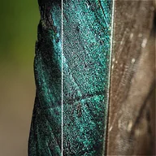

언샤프 마스크

레이어와 흐린 복사본의 차이를 다시 더해 선명하게 합니다. 강도는 흐림 범위, 양은 다시 더하는 정도를 정하며, 임계값을 50% 이상으로 올리면 작은 차이는 그대로 둡니다.
설정
| 설정 | 유형 | 범위 | 기본값 |
|---|---|---|---|
| 강도 | 숫자 | 0~2 | 0.02 |
| 양 | 숫자 | 0%~200% | 50% |
| 임계값 | 숫자 | -50%~100% | 50% |
| 마스크 표시 | 켜짐 또는 꺼짐 | – | 꺼짐 |

레이어와 흐린 복사본의 차이를 다시 더해 선명하게 합니다. 강도는 흐림 범위, 양은 다시 더하는 정도를 정하며, 임계값을 50% 이상으로 올리면 작은 차이는 그대로 둡니다.
| 설정 | 유형 | 범위 | 기본값 |
|---|---|---|---|
| 강도 | 숫자 | 0~2 | 0.02 |
| 양 | 숫자 | 0%~200% | 50% |
| 임계값 | 숫자 | -50%~100% | 50% |
| 마스크 표시 | 켜짐 또는 꺼짐 | – | 꺼짐 |